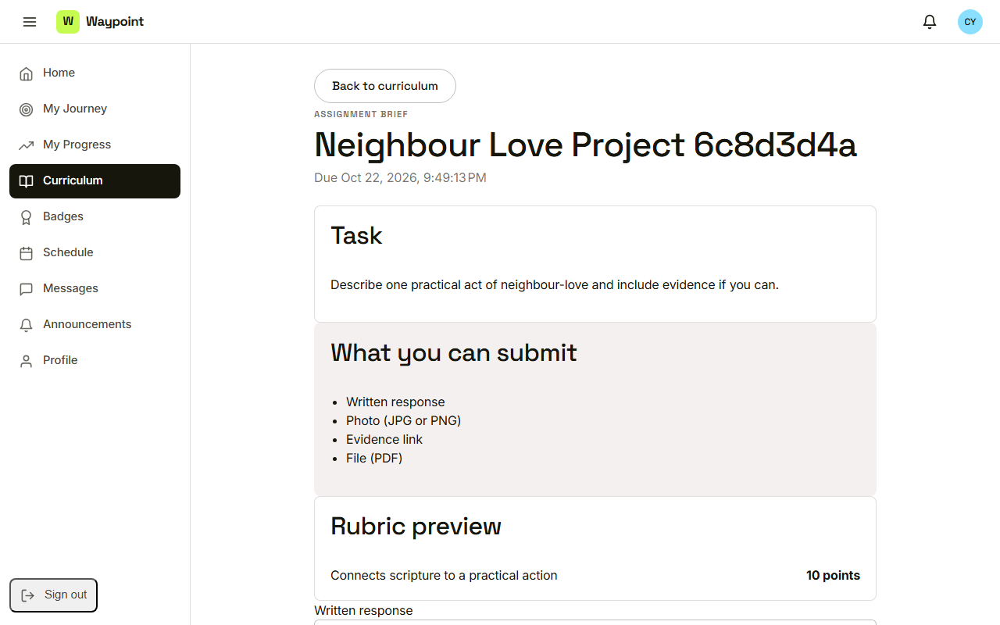
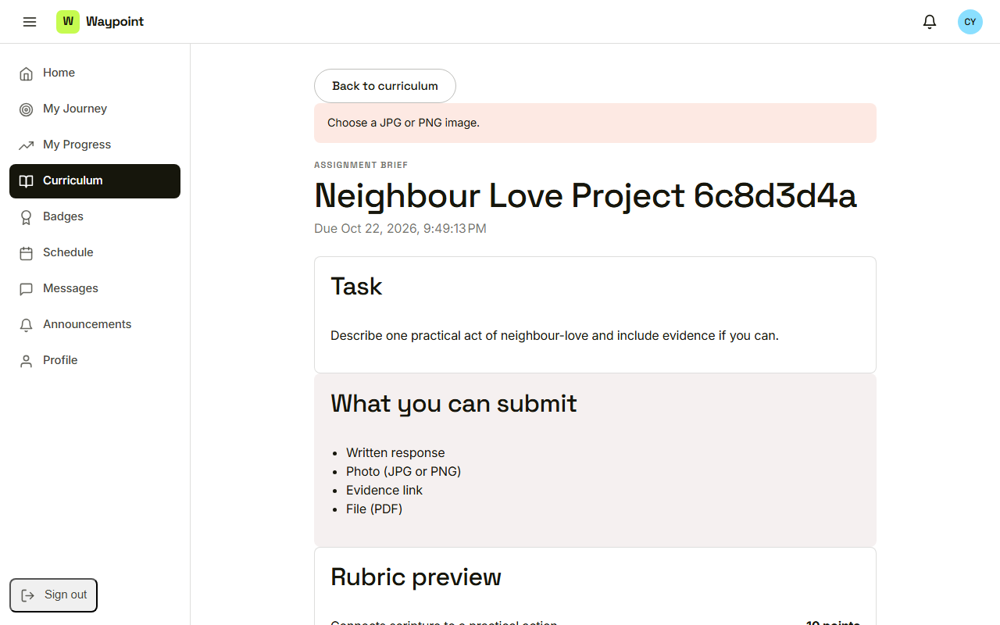
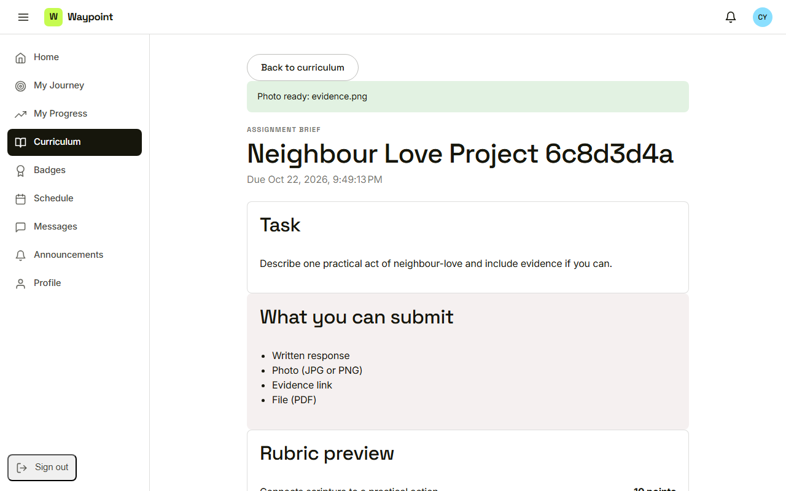
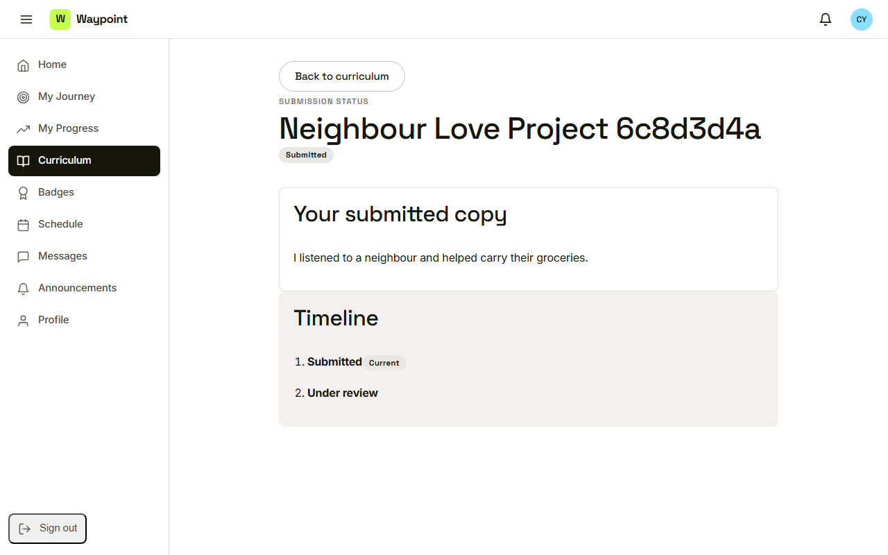

Waypoint · Video 037
Submitting an assignment
From the brief to the mentor
Task, due date, allowed types

The brief and the rubric preview
Files are checked as chosen

Choose a JPG or PNG image
Photo ready

Photo ready, then the own work box
Submitted and read only

Status: submitted
Things to remember
- The brief shows the task, due date, types and rubric
- Required fields and the own work box are enforced
- Photos must be JPG or PNG, checked as they are chosen
- After submitting, the work is read only